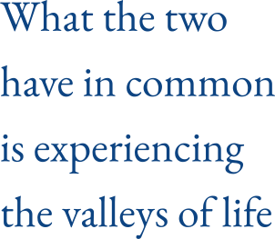

Story #03
The Story of How Co-leaders Was Born
"Creating from Others" Project
Story #03-1

On November 22, 2014, the CTI "Leadership Program" began. We met as one of the many participants. During the program, there was a "Co-Lead Project" where we were paired up in twos, and by chance, we became partners.
We started by getting to know each other, sharing our life curves (the ups and downs of our lives). Junji, who loves alcohol, and Shiho, who doesn't drink a drop. Shiho, a single mother, declared, "No more men for me," while Junji wondered, "How can I build a relationship with someone who doesn't drink?" That's where it all began.
What the two people have in common is that they have both experienced the "trough of life." Since the two of them have dived into the darkness, they could use their resources to touch the darkness of their hearts. We decided that the project we would create together would deal with "darkness," and we would try to treat that "darkness" in a pop way, so we named the workshop "Hide and Seek in the Forest."

While considering the venue for the workshop, Shiho suggested "Yugawara," a place with which we felt a connection. It was away from Tokyo, and we weren't sure if people would come, but Junji encouraged it, saying, "That's great, let's do it."
As a single mother, Shiho always had to consider "What about the child?" when participating in workshops. Therefore, for this workshop, we arranged for a sitter, making it possible for attendees to bring their children. This not only affected the preparation but also the setting on the day of the event, yet we decided to go ahead with "If there are two of us, let's try the challenge!"
Reflecting on this exchange, it was Shiho taking a step forward and suggesting an idea, and Junji positively affirming it. This may have been a prototype of what later became a very apparent pattern in their relationship.
Following this experience of "creating from relationships," Shiho began to study "Relationship Systems Coaching."
The Meeting of Three
Story #03-2
Shiho brought her child to the event for the "Co-lead Project". That was the first time Junji met her child.
From the child's point of view, the child probably felt angry that "Mommy is spending all her time with a stranger," and he took out his anger on Shiho, saying, "Let's go home early!" Junji stood there stunned. Shiho felt like this is the reality of having a child, it's a mess, this is what it's all about. Shiho thought that Junji might be turned away by the hardships of being a single mother.
After that, a few weeks after the "Co-lead Project" ended, Shiho stopped by Kyoto with her child to have a thank you party, and the three of us had a chance to meet again.
At that time, for some reason, the child naturally held hands between Junji and Shiho, and the three of them walked together. It was a moment when I felt like we were like a family. After I got home, my child said, "Junji looks like his father." Did the child have the ability to feel something?
The Future of Two, The Fluctuations of a Family
Story #03-3
Even after the "Co-Lead Project," we naturally began talking about our future together. Shiho's dream was "to travel the world with her child while coaching," and Junji strongly supported her, saying, "It wouldn't be Shiho if you didn't do that."
As we discussed our future, Junji suddenly said, "Let's get married for now." This proposal was very pleasing to Shiho, but it also introduced a "fluctuation" into her current life, living with her parents. The words that came from Shiho were, "Do you understand what you're saying?"
First, she talked it over with her child in the bath. "Junji might become your dad, what do you think?" she asked. The child responded, "I wouldn't be surprised because I know him, but grandma would be surprised, I think. I don't want to change schools."
Shiho's parents, who had been prepared to raise their grandchild all along, intellectually understood they should be happy about "a new father for their grandchild," yet emotionally, it was painful, and they appeared to be struggling with accepting the idea. Living with this pain was also very difficult for Shiho herself.
Amidst this, Shiho's feelings began to change. She had previously been cautious, fearing getting hurt again, always metaphorically "tapping the stone bridge before crossing." However, realizing that there is nothing absolute, she thought, "Maybe it's okay to fail again!" and felt ready to take the leap.

The Beginning of the 'Creating a Stepfamily' Project
Story #03-4
In order to move forward on this path that we didn't know how to proceed, we both started receiving systems coaching.
How do we balance our parents' values with the family we want to create? What should we choose our child's last name? What should we do with our wedding? What should we do with our jobs? Where should we live? How should we balance our values of money? etc...Through system coaching, we have been able to communicate and move forward through all sorts of identity-changing events.
For Shiho, it was a frightening path, involving her child and parents, and filled with the fear of what would happen if it failed again. For Junji, it was also daunting, unsure of how to interact with the child and facing Shiho's parents who were not very optimistic. It was confusing how to build relationships from there.
Junji's parents also kept asking him, "When are you going to get married?" However, when the time came to get married with a person who was a single mother with child, they were not without worries. The three of us went to meet Junji's parents, and the state of the three made them reassured and started to support us.
Junji's relationship with his father, who had been estranged until then, also begins to change. He learned about his father's birth. Junji's father was actually the child of a single mother and grew up not knowing his own father. Junji began to feel a strange connection between parent and child, and he wondered what kind of connection there was.
My own father was also my father, without even knowing that "dad" existed. That's why Junji is so passionate about parents and children.
Although there are always fluctuations in the relationship with parents and children,
- ・Based on the relationship between the couple, as long as they keep checking in and talking, it's okay.
- ・Taking care of the important things of someone you care about is a form of deep love.
- ・To deepen our partnership, it is important to share our "darkness" and "dreams"
That's what we've come to understand.
The Establishment of Co-leaders
Story #03-5
Half a year after receiving systemic coaching, we moved to Kyoto and started our life as three, which continued to be shaky. There was a constant disruption as the usual norms for each of us no longer applied.
Still, we held "family meetings" regularly to share our feelings and forge our own path. It was okay for the child to call the stepfather "Jun-chan" instead of "Dad." At PTA meetings and school visitation days, it wasn't always "mom" who went, whoever could, would go. Being a stepfamily was something we shared openly about with our child's friends and their parents.
There is no such thing as a "normal" family. The idea that we create our own families was fostered in our family. Meanwhile, my family's "family meeting" was published in a magazine. "Continuing to have a dialogue with each other as we are, and creating a future that doesn't fit either of us." This is what we want to do, and we believe that this is exactly what we can do.

Then, about a year after getting married, Junji mentioned, "I might quit my current job (at the engineering company)." To which Shiho naturally responded, "Then, shall we start a company together?" If we were to do it, we knew what it entailed. This was the catalyst for us jointly running a corporation, and in February 2017, "Co-leaders" was established.
As a side note, Junji has decided to run Co-leaders as a side job instead of quitting the company he works for. (If he express what he doesn't want to do without lying, it won't turn out to be something he doesn't want to do. But now the environment is gradually being established to spread coaching within the company, and to carry out original activities such as system coaching and expanding opportunities for dialogue. It is thanks to you that we are able to make use of this.)
As "Co-leaders", we work on all kinds of organizational development and the introduction of 1on1, and while co-leading support for all kinds of families, we also co-lead family relationships.